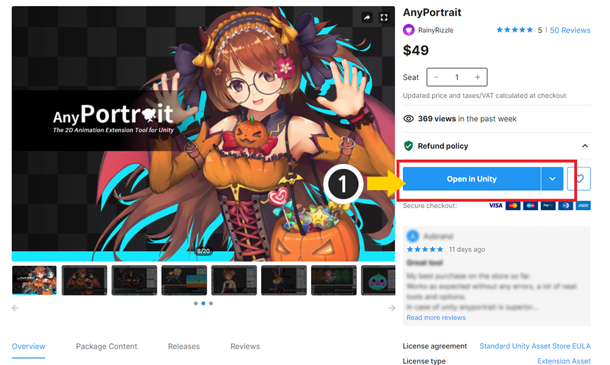
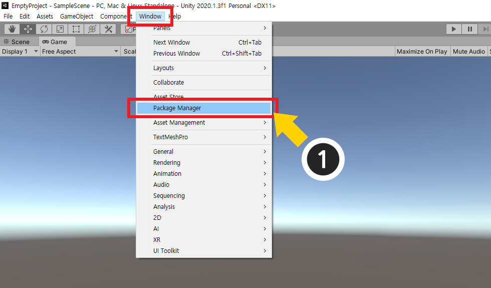
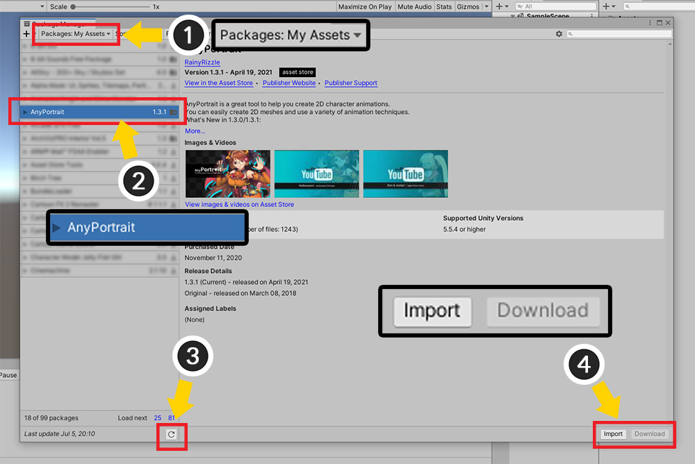
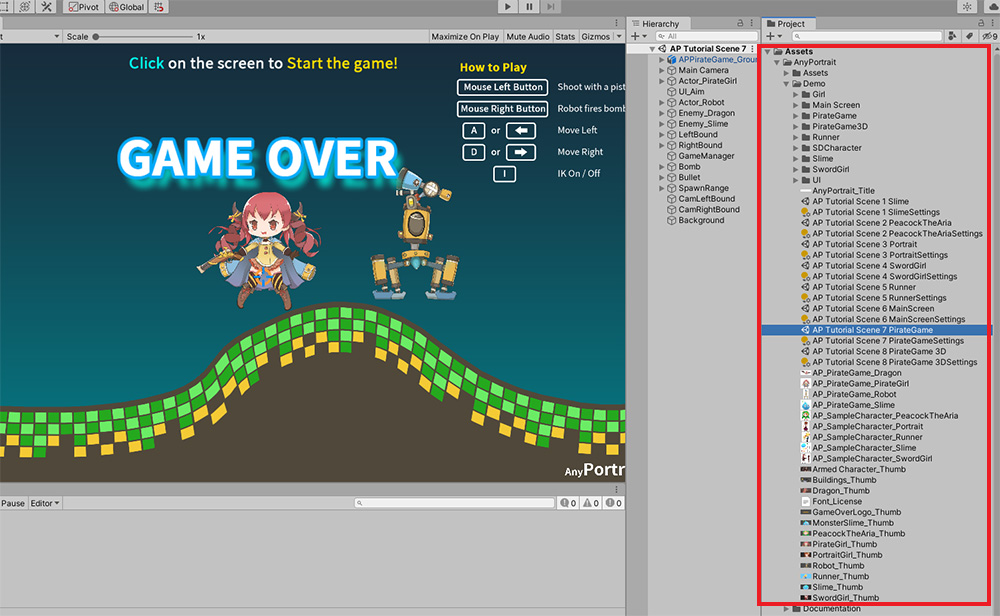
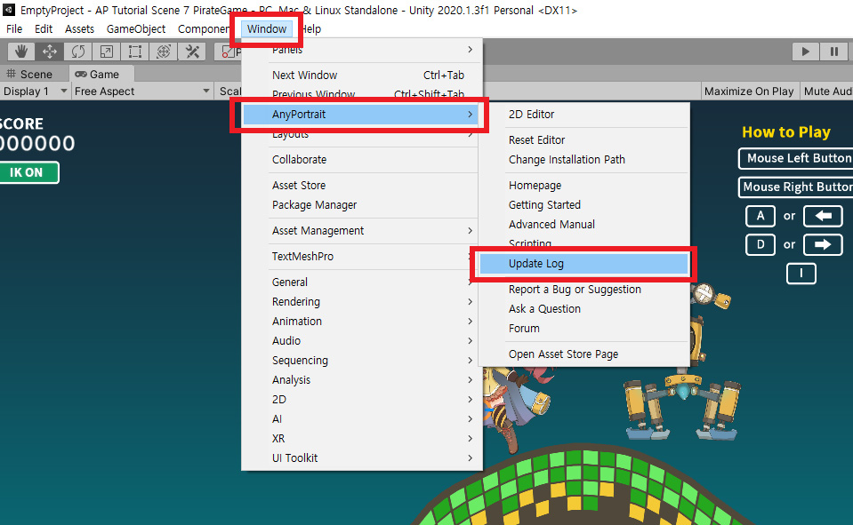
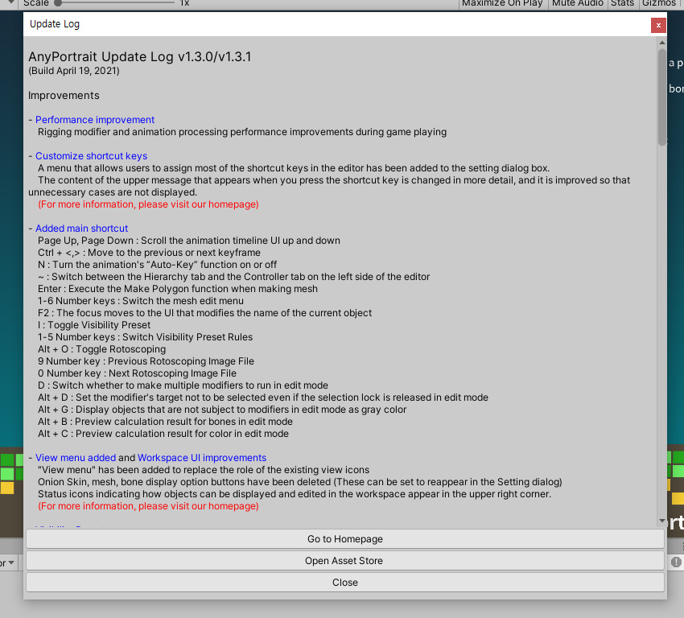

AnyPortrait > 메뉴얼 > 설치, 업데이트 방법
설치, 업데이트 방법
이 페이지는 유니티 에셋 스토어(Asset Store)에서 구입한 에셋을 다운로드한 후, 사용자의 프로젝트에 가져오는 방법을 설명합니다.
이 페이지의 설명은 AnyPortrait를 포함해서 모든 에셋에 적용됩니다.
유니티 버전에 따라서 에셋을 관리하는 방법이 다를 수 있으며, 이 문서는 Unity 2020.1을 기준으로 작성되었습니다.

에셋 스토어에서 에셋을 구입했다면, 구매 버튼이 "Open in Unity" 버튼으로 변경되어 있을 것입니다.
(1) Open in Unity 버튼을 눌러서 에셋을 임포트할 유니티 프로젝트를 열 수 있습니다.

유니티 에디터가 열려있다면 위와 같이 패키지 매니저를 열면 됩니다.
(1) 유니티 에디터에서 Window > Package Manager를 엽니다.

(1) 패키지 카테고리를 My Assets으로 변경합니다.
(2) 구입한 에셋을 선택합니다.
(3) 만약 에셋이 보이지 않는다면 갱신 버튼을 누르거나 유니티 에디터를 재시작해봅시다.
에셋을 구입한 계정으로 유니티 에디터를 실행해야합니다.
(4) Import 버튼과 Download 또는 Update 버튼이 우측 하단에 나타납니다.
- Import : 다운로드된 에셋을 현재 프로젝트로 가져옵니다.
- Download : 에셋을 사용자 컴퓨터의 지정된 위치에 다운로드합니다.
- Update : 현재 버전보다 최신 버전의 에셋으로 업데이트합니다.
아직 에셋을 다운로드하지 않았다면 Download 또는 Update 버튼을 먼저 누릅니다.
그 이후, Import 버튼을 누릅니다.

에셋의 항목들 중 어떤 것을 프로젝트에 임포트할 지 물어보는 다이얼로그가 나타납니다.
AnyPortrait의 경우 가능한 모두 선택된 상태여야 합니다. (Demo 폴더는 선택을 해제해도 됩니다.)
(1) 항목들을 확인한 후 Import 버튼을 누릅니다.

구입한 에셋이 프로젝트에 설치된 것을 볼 수 있습니다.
만약 에셋의 최신 버전이 업데이트된 경우에도 동일한 방법으로 임포트를 하면 됩니다.
AnyPortrait 업데이트 로그 확인하기
많은 다른 에셋들과 마찬가지로, AnyPortrait도 업데이트된 변경점을 별도의 메뉴에서 확인할 수 있도록 안내합니다.

유니티 에디터의 Window > AnyPortrait > Update Log 메뉴를 엽니다.

업데이트 로그 창에서 최신 버전의 변경점을 볼 수 있습니다.
AnyPortrait 에디터의 설정에서 언어를 바꾸면, 해당 언어로 업데이트 로그를 볼 수 있습니다.